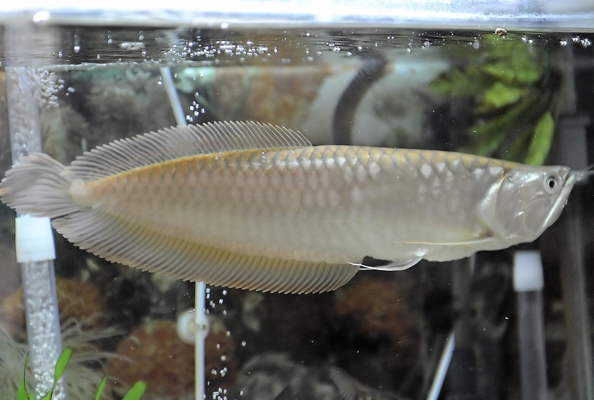
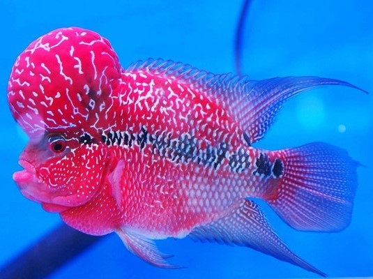

Ikan ini mempunyai bentuk dan karakter yang unik dan cenderung agresif dalam mempertahankan wilayahnya.

Ikan Arwana
Ikan hias air tawar yang sering dipelihara karena memiliki bentuk yang unik.
Ikan Guppy
Ikan ini memiliki nama lain yaitu ikan seribu karena populasinya yang sangat banyak, bahkan hampir di seluruh dunia ada jenis ikan ini.
Ikan Koi
Ikan koi awal mulanya berasal dari Cina dan kemudian berkembang pesat di Jepang sejak 200 tahun yang lalu sampai sekarang.

Ikan Louhan
Salah satu ikan hias yang dipelihara di dalam akuarium karena warna sisik mereka yang hidup serta benjolan kepala mereka yang berbentuk khas.
Ikan Mas Koki
Ikan koi yang ada jambulnya dan berekor pendek dengan warna yang bervariasi merupakan jenis ikan mas koki yang sangat disukai oleh para pehobi ikan hias.
Ikan Cupang
Ikan cupang umumnya hidup di perairan daerah tropis terutama di benua Asia hingga Afrika.
Dimana habitat asalnya berupa perairan yang dangkal dengan air yang jernih, bertemperatur 24-27 derajat celsius dengan pH kisaran 6,2-7,5.
Ikan Cupang pada dasarnya menyukai jenis makanan yang bergerak seperti Infusoria, Paramecium, Vinegar Eel, Kutu Air, Artemia, Jentik Nyamuk, atau Cacing Sutra.
Ikan arwana merupakan salah satu jenis ikan hias yang termasuk dalam ikan purba.
Salah satu jenis yang paling populer yaitu arwana super red dan golden red berasal dari perairan Indonesia.
Ikan arwana memiliki sisik yang mengkilap dengan bentuk bulat dan juga berukuran besar.
Makanan untuk ikan ini adalah makanan alami seperti cacing sutra, jangkrik dan lainnya.
Ikan ini salah satu jenis ikan air tawar yang memiliki penampilan morfologis cukup menarik dan toleransi yang tinggi terhadap kondisi perairan yang kurang baik.
Ikan ini digemari karena mudah dipelihara dan memiliki bermacam macam corak warna yang indah, terutama pada ikan jantan.
Ikan guppy juga mampu beradaptasi diperairan air payau pada kisaran suhu 25 derajat celcius sampai 28 derajat celcius.
Anda bisa memberi makan
Ikan koi biasanya dipelihara di kolam yang cukup besar dan dangkal, dengan air yang bersih dan aliran air yang cukup.
Ikan koi adalah ikan omnivora yang dapat memakan berbagai jenis makanan. Makanan utama ikan koi adalah tumbuhan dan hewan kecil seperti cacing dan serangga air.
Ikan koi juga dapat diberi makan dengan pakan ikan yang tersedia di pasaran.
Ikan koi merupakan ikan ovipar (bertelur) yang berkembangbiak dengan cara meletakkan telur di permukaan air.
Telur ikan koi akan menetas setelah 3-4 hari, tergantung pada suhu air dan kondisi lingkungan.
Ikan louhan memiliki bentuk badan yang agak persegi dan sedikit bulat, serta ekor pendek mirip dengan ikan mujair.
Ikan ini juga memiliki mata bulat, sisik-sisik yang lembut yang agak melebar, dan mulut yang terlihat monyong serta tebal.
Ikan louhan juga memiliki tonjolan atau jenong pada bagian kepala, yang menambahkan keunikan dan daya tarik pada ikan ini.
Pastikan louhan ditempatkan dalam air tawar yang berkualitas, bersih, jernih, dan memiliki aliran oksigen yang cukup.
Ada 2 jenis makanan ikan ini, alami seperti cacing,kelabang,ikan kecil sedangkan pabrikan seperti pelet.
Ikan koki sendiri memiliki bentuk tubuh yang khas, dengan tubuh gempal, kepala sedikit menonjol, ekor yang indah serta memiliki warna tubuh yang cerah membuat ikan jenis ini memiliki keunikan tersendiri dihati penggemarnya.
Ditambah lagi ikan mas koki juga memiliki cara berenang yang unik dan menggemaskan, yang menambah nilai plus dari ikan ini.
Ikan mas koki merupakan ikan omnivora atau pemakan segalanya, meskipun begitu kualitas pakan yang diberikan pada ikan koki sangatlah berpengaruh terhadap keindahan warna dari ikan itu sendiri.